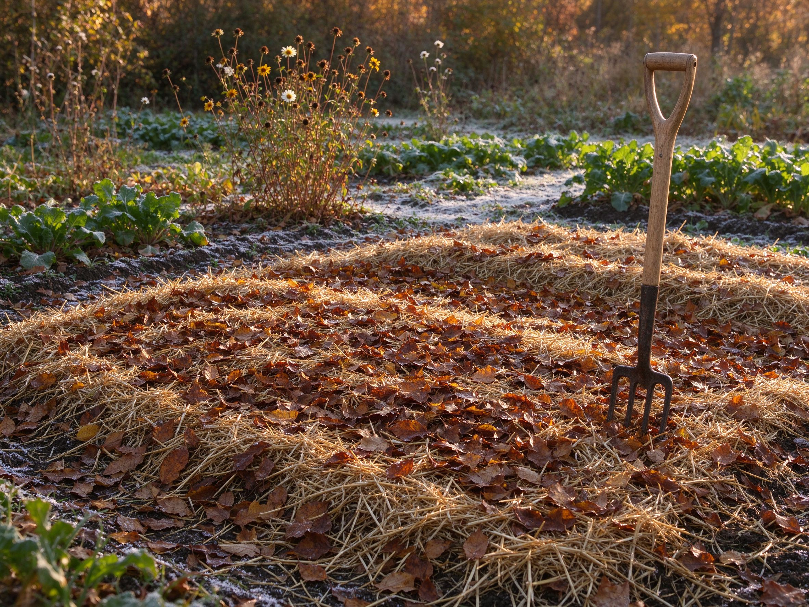

Putting the Garden to Bed: Fall Cleanup & Winter Protection
Every autumn there's a moment when the garden stops producing and starts preparing. A little work now — an afternoon or two — protects your soil, saves your perennials, and hands you a healthier start next spring. And a surprising amount of it is about leaving things alone. Here's the practical checklist.
Start With the Soil, Not the Plants
The single best thing you can do for next year's garden happens now: protect the soil. Bare earth over winter loses structure, washes away, and crusts over. So instead of digging, mulch.
- Spread 5–10 cm of fallen leaves, straw, or compost over empty beds.
- Leave it rough and uneven — a textured surface catches rain and insulates better than a tidy flat layer.
- Don't dig or till. Leaving the soil structure intact is the whole point of no-till gardening — and winter is no exception.
What to Cut Back, What to Leave Standing
Not everything should be tidied. Cut back the parts that could harbor disease; leave the parts that feed wildlife and shelter beneficial insects.
Cut back
- Annual vegetables and spent annual flowers — pull them and compost the healthy ones.
- Any plant with signs of mildew, rust, or blight — bin it rather than compost it, so disease doesn't return.
- Perennials that flop and rot in wet winter weather (hostas, for example) — cut to the ground once they've died back.
Leave standing
- Seed heads of coneflowers, rudbeckia, sunflowers, and grasses — they feed birds all winter and look beautiful with frost.
- Hollow stems — many native bees overwrite in them; cut them back in spring instead, once the bees have emerged.
- Leaves around perennials — a light natural mulch that protects crowns from freeze-thaw heaving.
Protect the Vulnerable Plants
- Newly planted perennials and shrubs — mulch deeply around the base (but keep mulch off the stem itself) to buffer root-zone temperature swings.
- Tender perennials in cold regions — a thick mulch blanket, or move pots into a sheltered spot; for borderline-hardy plants, wrap pots or sink them into the ground.
- Evergreens — water them deeply before the ground freezes. They lose moisture all winter and can scorch in dry, freezing wind.
- Containers — pots freeze harder than ground soil; move them against a wall, under eaves, or into an unheated garage.
Winterize the Tools and Structures
- Drain and store hoses; shut off outdoor taps before the first hard freeze.
- Clean, dry, and sharpen tools — a wiped-down pruner lasts years longer.
- Empty and scrub containers, then store them dry and upside down.
- Check supports, netting, and row covers; repair or replace before spring.
- Cover cold frames and empty raised beds, or mulch them as above.
The Payoff Next Spring
A garden put to bed properly wakes up easier: soil that's still alive and workable, perennials that survived intact, fewer overwintering pests and diseases, and a head start on the season. Best of all, most of the "work" is really just mulching and pruning — and much of the rest is knowing when to do nothing at all.